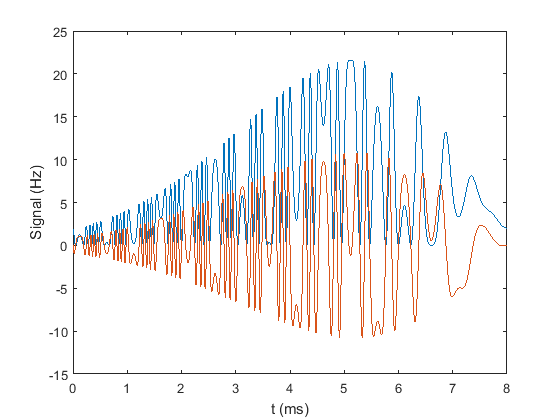

Create a 2D selective RF pulse for a spin echo sequence
This demo defines an entire MRI sequence in MATLAB to selectively excite a volume. A slice through this excited volume is then imaged with a slice-selective refocusing pulse.
This example performs the following steps:
- Create a 2D RF pulse and corresponding k-space trajectory.
- Calculate the gradient waveforms from the trajectory
- Create readout gradient and phase encode strategy.
- Loop through phase encoding and generate sequence blocks.
- Write the sequence to an open file format suitable for execution on a scanner.
Contents
Sequence parameters
A new sequence object is created by calling the class constructor.
seq=mr.Sequence();
Sequence parameters are defined using standard MATLAB variables
fov=220e-3; % Field-of-view Nx=256; Ny=256; % Imaging resolution foe=200e-3; % Field of excitation targetWidth=22.5e-3; % Diameter of target excitation pattern n=8; % Number of spiral turns T=8e-3; % Pulse duration
Excitation k-space
A inward spiral trajectory for the excitation k-space is defined. The field-of-excitation and number of spiral turns defines the maximum k-space extent.
kMax=(2*n)/foe/2; % Units of 1/m (not rad/m) tk=0:mr.Sequence.GradRasterTime:T-mr.Sequence.GradRasterTime; kx=kMax*(1-tk/T).*cos(2*pi*n*tk/T); ky=kMax*(1-tk/T).*sin(2*pi*n*tk/T); plot(kx,ky) xlabel('k_x (1/m)'); ylabel('k_y (1/m)');
RF pulse definition
The RF pulse is defined closely following Pauly et al, JMR 1989; 81:43-56. The target excitation is a Gaussian defined by
The equivalent in k-space is calculated with the Fourier transform
where the width is given by
tr=0:mr.Sequence.RfRasterTime:T-mr.Sequence.RfRasterTime; kxRf=interp1(tk,kx,tr,'linear','extrap'); kyRf=interp1(tk,ky,tr,'linear','extrap'); beta=2*pi*kMax*targetWidth/2/sqrt(2); % Gaussian width in k-space signal0 = exp(-beta.^2.*(1-tr/T).^2).*sqrt((2*pi*n*(1-tr/T)).^2+1); % Two RF waveforms are superimposed to excite a replica pattern offset 5cm % in x and y directions. The shifted pattern is achieved with modulation by % a complex exponential. signal = signal0.*(1 + exp(-1j.*2*pi*5e-2*(kxRf + kyRf))); plot(1e3*tr,real(signal),1e3*tr,imag(signal)); xlabel('t (ms)'); ylabel('Signal (Hz)');
Add gradient ramps to achieve the starting gradient value and moment (first k-space point) and likewise ramp the gradients to zero afterwards. The RF pulse is also padded with zeros during the ramp times.
[kx,ky,signal]=mr.addRamps({kx,ky},'rf',signal);
% The gradient waveforms are calculated based from the k-space trajectory
% using the |traj2grad| function, which internally calculates the finite
% differences.
gx = mr.traj2grad(kx);
gy = mr.traj2grad(ky);
% Define arbitrary gradient and RF events using functions in the |mr|
% toolbox.
rf = mr.makeArbitraryRf(signal,20*pi/180);
gxRf = mr.makeArbitraryGrad('x',gx);
gyRf = mr.makeArbitraryGrad('y',gy);
Define other gradients and ADC events
deltak=1/fov; gx = mr.makeTrapezoid('x','FlatArea',Nx*deltak,'FlatTime',6.4e-3); adc = mr.makeAdc(Nx,'Duration',gx.flatTime,'Delay',gx.riseTime); gxPre = mr.makeTrapezoid('x','Area',-gx.area/2,'Duration',2e-3); phaseAreas = ((0:Ny-1)-Ny/2)*deltak;
Refocusing pulse and spoiling gradients.
The refocusing pulse selects a single slice through the excited volume.
[rf180, gz] = mr.makeBlockPulse(pi,'Duration',1e-3,'SliceThickness',5e-3); gzSpoil = mr.makeTrapezoid('z','Area',gx.area,'Duration',2e-3);
Calculate timing
Echo time and repetition time are, TE=20ms, TR=500ms
delayTE1=20e-3/2 - mr.calcDuration(gzSpoil) - mr.calcDuration(rf180)/2; delayTE2=delayTE1 - mr.calcDuration(gxPre) - mr.calcDuration(gx)/2; delayTR=500e-3 - 20e-3 - mr.calcDuration(rf) - mr.calcDuration(gx)/2;
Define sequence blocks
Loop over phase encodes and define sequence blocks
for i=1:Ny seq.addBlock(rf,gxRf,gyRf); seq.addBlock(mr.makeDelay(delayTE1)); seq.addBlock(gzSpoil); seq.addBlock(rf180,gz); seq.addBlock(gzSpoil); seq.addBlock(mr.makeDelay(delayTE2)); gyPre = mr.makeTrapezoid('y','Area',phaseAreas(i),'Duration',2e-3); seq.addBlock(gxPre,gyPre); seq.addBlock(gx,adc); seq.addBlock(mr.makeDelay(delayTR)); end seq.write('selectiveRf.seq'); % Write to pulseq file
The sequence can now be executed on scanner hardware. It can be easily visualised with the plot toolbox function.
seq.plot('TimeRange',[0 35e-3])

Experimental data is reconstructed with a 2D FFT to produce an image showing the desired excitation pattern.
figure
imshow('../doc/images/rf2d.png')